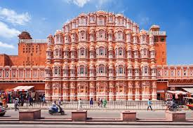
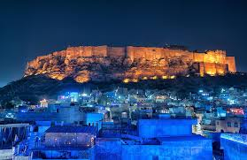
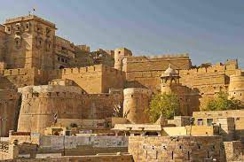
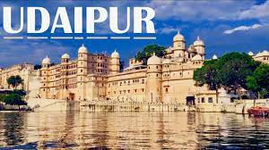

|  | Jaipur is the capital and the largest city of the Indian state of Rajasthan. As of 2011, the city had a population of 3.1 million, making it the tenth most populous city in the country. Jaipur is also known as the Pink City, due to the dominant color scheme of its buildings. It is located 268 km (167 miles) from the national capital New Delhi. |
|  | Jodhpur is a city in the Thar Desert of the northwest Indian state of Rajasthan. Its 15th-century Mehrangarh Fort is a former palace that’s now a museum, displaying weapons, paintings and elaborate royal palanquins (sedan chairs). Set on on a rocky outcrop, the fort overlooks the walled city, where many buildings are painted the city’s iconic shade of blue |
|  | Jaisalmer is a former medieval trading center and a princely state in the western Indian state of Rajasthan, in the heart of the Thar Desert. Known as the "Golden City," it's distinguished by its yellow sandstone architecture. Dominating the skyline is Jaisalmer Fort, a sprawling hilltop citadel buttressed by 99 bastions. Behind its massive walls stand the ornate Maharaja's Palace and intricately carved Jain temples |
|  | Udaipur, formerly the capital of the Mewar Kingdom, is a city in the western Indian state of Rajasthan. Founded by Maharana Udai Singh II in 1559, it’s set around a series of artificial lakes and is known for its lavish royal residences. City Palace, overlooking Lake Pichola, is a monumental complex of 11 palaces, courtyards and gardens, famed for its intricate peacock mosaics. |